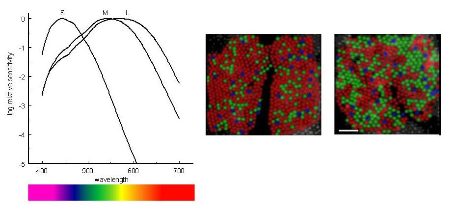
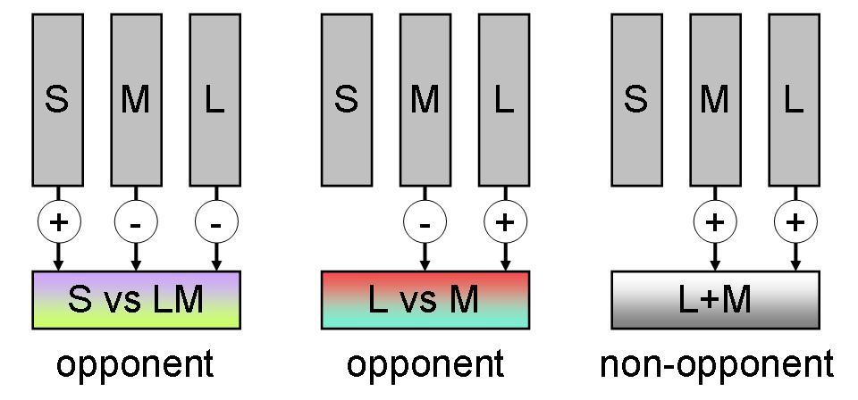
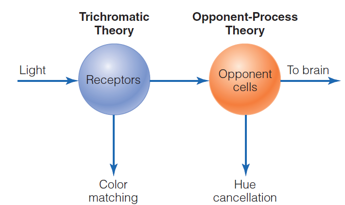
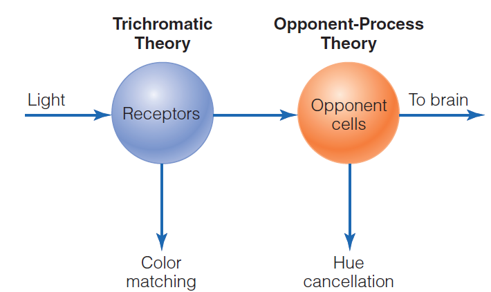
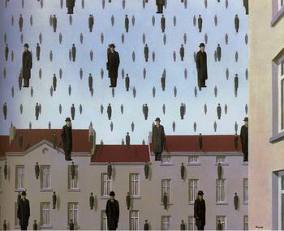
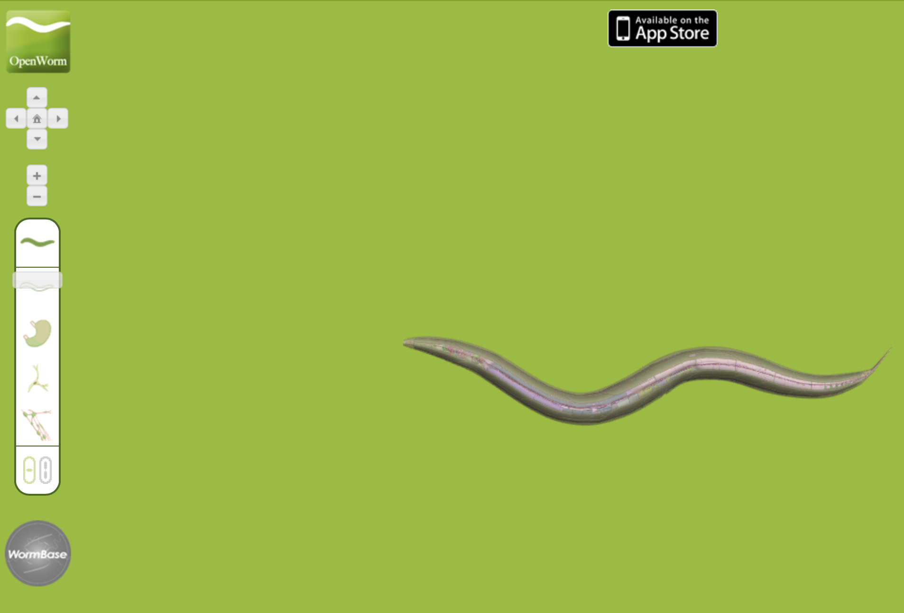

The Mind-Body Problem
Chapter 2
Ontologic Issues: Thought experiments
Thought experiments
- Philosophers use thought experiments to uncover our intuitions and biases about the mind
- Framework to identify faulty logical assumptions and knowledge gaps
- Clears field to set up and characterize a valid problem
- Restricted to abstract domain of Concepts and Theory
- Wikipedia
- “A thought experiment is a hypothetical situation in which a hypothesis, theory,[a] or principle is laid out for the purpose of thinking through its consequences.”
Quantum States

1
KEY TERMS
embodiment
mind-body problem
philosophy of mind
thought experiment
intuition pump
mereological fallacy
qualia/quale
substance dualism/Cartesian dualism
res extensa
res cogitans
pineal gland
“Intuition Pump” Metaphor
- Thought experiments in philosophy are not real experiments.
- “the Chinese Room”
- “the Trolley Problem”
- “Mary the color scientist”
- Instead, they are narratives or scenarios designed to get us to imagine a situation vividly enough that our intuitions about it come to the surface.
- Intuition Pumps
- Can be helpful OR misleading.
- A well-designed one clarifies thinking and reveals hidden assumptions.
- A poorly designed one can manipulate us into holding onto confused or biased intuitions.
“Intuition Pump” Metaphor
- Daniel Dennett:
- These scenarios are designed to “prime” or “squeeze out” intuitive reactions from the audience. As a water pump draws up water from the ground, an intuition pump draws intuitions out from the mind.
In short
- When Dennett calls thought experiments “intuition pumps,” he means they are tools built to elicit and examine our intuitions, which can then be inspected, criticized, and either refined or discarded in the process of philosophical analysis.
The mind and the brain
- The mind-brain problem
- defines relationships between physical and mental events
- How do mental states arise from a physical brain?
The mereological fallacy
Does saying “My brain feels pain” make sense?
What about “the brain recognizes words”?
Paul Nunez will have much more to say about the issues of parts/wholes and what is top/bottom
Qualia
- The subjective quality of perceptions
- Sensations
- The colour red
- The smell of a rose
- The feeling of pain
- How would you describe “red” to someone else?
Try this: Describing red
- Choose something with prominent qualia, such as a red rose (see figure 2.1). How would you describe it to someone else? How would you describe colour to someone without sight?
Try this: How many qualia?
- Stop and consider your environment.
- How many qualia can you become aware of?
- Can you be aware of more than one at a time?
KEY TERMS
monism
dualism
idealism
materialism/physicalism
determinism
parallelism
occasionalism
dendron
psychon
property dualism
emergentism or emergence
Dualism and monism
- René Descartes and substance dualism (Cartesian dualism)
- Res cogitans and Res extensa
- Other types of dualism
- Monism (several kinds?)
Dualism
- There are two types of substance
- Mind and matter
- But how do they interact?
Monism
- There is one type of matter
- Usually physical monism and matter
- But doesn’t have to be
- Usually physical monism and matter
- How does physical matter give rise to subjective experience?
Ontologic Issues: Knowledge
KEY TERMS
knowledge argument
inverted spectrum
argument by analogy (other minds)
congenital analgesia
dissociation
p-zombie
epiphenomenalism
conceivability
nociceptor
nociceptive pain
A-fibres
C-fibres
gate control theory
endorphins
The knowledge argument

Mary the Color Scientist
1. How does the ‘Mary’ color thought experiment make us rethink the idea that all knowledge comes from physical facts? Do you think science alone can fully explain consciousness or does Mary’s experience suggest there’s something more going on?
Mary the Color Scientist
2. Why do you think Mary’s first experience of seeing color is such a big deal for understanding consciousness? What’s the difference between knowing something in theory and actually experiencing it? Can you argue that although Mary spent her life studying colors, she didn’t know everything there was to know about color?
Mary the Color Scientist
3. How does the ’Mary” color thought experiment highlight the difficulty in explaining qualia (subjective experiences) using only physical factors?
Mary the Color Scientist
4. If Mary had devoted her life to studying consciousness, do you think she would have a different understanding of consciousness?
Mary the Color Scientist
(Explaining implicit “knowledge” that comes directly from experience.)
Mary the Color Scientist
| Argument | Supports Dualism | Supports Monism |
|---|---|---|
| The “Mary” Colour Experiment | If Mary learns something new upon seeing color, it suggests that subjective experience (qualia) is not fully captured by physical explanations. | If Mary doesn’t learn anything new, it suggests that complete physical knowledge is sufficient to account for subjective experiences. |
| Dennett’s Counterargument | N/A | Dennett argues that Mary would not be surprised, suggesting that subjective experiences can be fully understood through physical properties. |
| Knowledge by Description vs Knowledge by Acquaintance | N/A | Churchland uses Bertrand Russell’s distinction to argue that while Mary might gain a new form of knowledge (by acquaintance), this doesn’t necessarily introduce new facts beyond physical explanations. |
| Experience as Part of Knowledge | Some argue that Mary couldn’t possibly know everything about the world without experiential knowledge, which could be seen as a point against materialist monism. | N/A |
| The Hard Problem of Consciousness | The inability of materialist monism to solve the “hard problem” (how physical matter gives rise to subjective experience) can be seen as a point in favor of dualism. | Some argue that the “hard problem” might be an artifact of our current understanding and could be solved within a monist framework. |
The inverted colour spectrum
- Could you “see” violet when I “see” red?


 
Colour Perception
 

Inverted Color Spectrum
| Argument | Supports Dualism | Supports Monism |
|---|---|---|
| Inverted Spectrum Argument | The idea that people could experience colors differently (e.g., your red is my green) and that this is undetectable suggests that subjective experiences (qualia) are not fully captured by physical explanations. | If it’s possible to detect inversion behaviorally by asking people to make judgments about small differences in colors, then the physicalist view that all experiences can be explained physically is supported. |
| Hofstadter’s Critique | N/A | Hofstadter argues that the inverted spectrum argument is incoherent and that experiences are not detached from the physical brain or the world. This supports a monist view. |
| Asymmetries in Color Space | N/A | The existence of asymmetries in color space could make it impossible to find an inversion that is behaviorally undetectable, supporting the idea that experiences can be fully explained physically. |
| Neuroscience of Vision | The argument that neuroscience can’t tell us what we feel when we see red could be seen as a point in favor of dualism. | If neuroscience can eventually explain what we feel when we see colors, this would support monism. |
| Relation to Other Colors | The idea that something is left over about the “redness of red” and the “greenness of green” that isn’t captured by their relation to other colors could be seen as a point in favor of dualism. | If the experience of colors can be fully described in terms of their relations to other colors and their positions in color space, this would support monism. |
The problem of pain
- The physical aspect of pain
- The mental aspect of pain
- Pain in babies (27 weeks is gestation; 2nd trimester)
P-ZOMBIES
Philosophical zombies
- Could we have a creature that appears in every way to be conscious, but isn’t?
Is consciousness essential?
Being conceivable
Ontologic Issues: Mind-Brain Problem
Dualism vs Monism
| Topic/Concept/Thought Experiment | Dualism | Monism |
|---|---|---|
| Substance Dualism | Proposes that mind and matter are fundamentally different substances. Fits well with intuitive experiences and beliefs about the soul. | N/A |
| Problems with Substance Dualism | Faces the issue of how mind and matter interact; also, mental material is not accessible through physical or scientific methods. | N/A |
| Parallelism and Occasionalism | Attempts to explain the interaction between mind and matter through divine intervention. | N/A |
| Property Dualism | Introduces the concept that there is one substance but two kinds of properties: physical and mental. | N/A |
| Emergentism | N/A | A form of property dualism; mental properties emerge when matter is organized in certain complex ways. |
| Idealism | N/A | Proposes that the world is fundamentally mental; material objects exist only in the mind. |
| Materialism/Physicalism | N/A | Proposes that only physical matter exists, governed by the laws of physics. |
| Neutral Monism | N/A | Suggests that mind and matter are different aspects of a single substance. |
| The “Mary” Colour Experiment | Supports the idea that subjective experience (qualia) cannot be fully explained by physical properties alone. | Challenges materialism by suggesting that complete physical knowledge is insufficient to account for subjective experience. |
| Dennett’s Counterargument | N/A | Argues that complete knowledge would indeed prepare Mary for the experience of color, thus no “hard problem” exists. |
| Churchland’s Argument | N/A | Suggests that experience offers a different kind of knowledge (“knowledge-by-acquaintance”) but doesn’t necessarily introduce new facts. |



Epistemic Issues: Materialism
Materialism
- A type of monism
- All there is is matter
- Physics captures everything
KEY TERMS
reductive materialism
mind–brain identity theory
type identity theory
multiple realisability
eliminative materialism
folk psychology
More materialism
Reductive materialism
Eliminative materialism
- Getting rid of the problem of qualia
- A trick of how we think and speak
Epistemic Issues: Functionalism
Functionalism
- Silicon neurons and silicon brains
- The “China brain” thought experiment
- Can the population of China signal and act like a brain?
- Conversely: can a neuron be conscious?
KEY TERMS
functionalism
substrate independence
neuroprothesis
China brain
syntax
semantics
computation
strong AI
Chinese room
systems reply
A Function for Consciousness?
Neurons

- The brain has about 100 billion neurons.
- Each neuron might be connected to about 1000 others.
- Does consciousness really arise from just a lot of these connected together?
Arguments against functionalism
- Searle and the Chinese room
- All syntax and no semantics
- Is the “systems reply” adequate?
why does … Phenomenal Concsciousness matter?
- So what, if my behavior and cognition can be accounted for with brains, neurons, chemicals, and atoms?
- Is everything just an easy-problem within the scope of conventional psychology & neuroscience?
- The configuration of neurons in my brain determines my behavior & causes my experience - what it’s like to be me.
Many important things bump into the same problem.
- Emotional experience: anxiety, rumination,
- Identity & Self-narratives: self-perspective
- Social psychology: theory of mind
Epistemic Issues: Mysterianism
KEY TERMS
dancing qualia
organisational invariance
mysterianism
cognitive closure
non-reductive materialism
private knowledge
robot
ego theory
Mysterianism
- The problem of consciousness is too complex for our (human) minds
- It is like Beau the poodle trying to understand the nature of language and grammar: it is beyond the capabilities of his brain
What is it like to be a worm? (302 Neurons)

Summary
- What is the difference between mind and brain?
- The hard problem is why does it feel like something to be you
- How can the feeling of something, mind, arise from a purely physical system?
- How many types of substance are there?
- Does materialism / physicalism completely describe the universe?
Definitions
mind-body problem
philosophy of mind
thought experiment
intuition pump
Swampman
mind
brain
mereological fallacy
qualia/quale
substance dualism/Cartesian dualism
res extensa
res cogitans
pineal gland
parallelism
occasionalism
dendron
psychon
property dualism
emergentism or emergence
monism
dualism
idealism
materialism/physicalism
determinism
knowledge argument
knowledge argument
[inverted spectrum]{.tip data-tip=” a thought experiment, whereby individuals ‘see’ different colors; for example, when I have a sensation of red, you have a sensation of blue. How could we ever know?” data-pos=“right”}
nociceptor
nociceptive pain
A-fibres
C-fibres
gate control theory
endorphins
argument by analogy (other minds)
congenital analgesia
dissociation
p-zombie
epiphenomenalism
conceivability
reductive materialism
mind–brain identity theory
type identity theory
multiple realisability
[eliminative materialism]{.tip data-tip=” a materialist account of the mind body problem that says our everyday common sense “folk psychology” view of the world is wrong” data-pos=“right”}
folk psychology
functionalism
substrate independence
neuroprothesis
China brain
syntax
semantics
computation
strong AI
Chinese room
systems reply
dancing qualia
organisational invariance
mysterianism
cognitive closure
non-reductive materialism
private knowledge
robot
ego theory
KEY TERMS
- mind-body problem
- philosophy of mind
- thought experiment
- intuition pump
- Swampman
- mind
- brain
- mereological fallacy
- qualia/quale
- dualism
- substance dualism/Cartesian dualism
- res extensa
- res cogitans
- pineal gland
- parallelism
- occasionalism
- dendron
- psychon
- property dualism
- emergentism
- monism
- idealism
- materialism/physicalism
- determinism
KEY TERMS (continued)
- knowledge argument
- inverted spectrum
- nociceptive pain
- nociceptor
- A-fibres
- C-fibres
- gate control theory
- endorphins
- argument by analogy (other minds)
- congenital analgesia
- dissociation
- p-zombie
- epiphenomenalism
- conceivability
- reductive materialism
- mind–brain identity theory
- type identity theory
- multiple realisability
KEY TERMS (continued)
- eliminative materialism
- folk psychology
- functionalism
- substrate independence
- neuroprothesis
- China brain
- computation
- syntax
- semantics
- strong AI
- Chinese room
- systems reply
- dancing qualia
- organisational invariance
- mysterianism
- cognitive closure
- non-reductive materialism
- private knowledge
- robot
- ego theory
KEY TERMS
- mind-body problem
- philosophy of mind
- thought experiment
- intuition pump
- Swampman
- mind
- brain
- mereological fallacy
- qualia/quale
- dualism
- substance dualism/Cartesian dualism
- res extensa
- res cogitans
- pineal gland